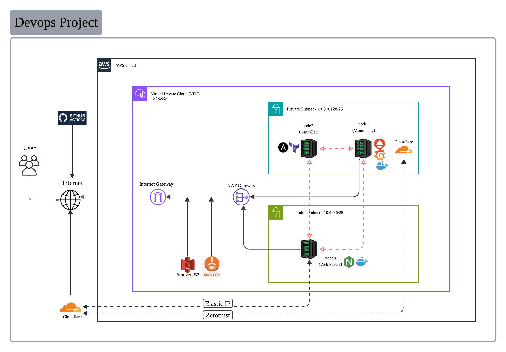

Overview
Final project for the DevOps bootcamp. It sets up cloud infrastructure using Infrastructure as Code (IaC):
- Terraform — creates the AWS infrastructure
- Ansible — configures the servers
- Docker — runs the monitoring stack (Prometheus + Grafana) and the web server
Architecture
- AWS region:
ap-southeast-1 - VPC:
10.0.0.0/24with a public subnet (10.0.0.0/25) and a private subnet (10.0.0.128/25), plus one NAT gateway - 3 EC2 nodes (t3.small, Ubuntu 24.04, 16GB disk):
- node1 — private subnet (runs Prometheus + Grafana via Docker, Cloudflare Tunnel for access)
- node2 — private subnet (runs node_exporter)
- node3 — public subnet (runs nginx web server in Docker)
- Access: SSM (
EC2-SSM-Role) and SSH (keyyusof2-key)
Project Structure
.
├── .github/workflows/ # GitHub Actions CI/CD pipeline (commit-pipeline.yml, static.yml)
├── terraform/ # AWS infrastructure (VPC, EC2, security groups, inventory)
├── ansible/ # Server setup (playbooks, templates, docker compose)
├── app/ # Web app (front-end "ship")
├── scripts/ # Docs sync engine (sync-docs.mjs)
├── package.json # Root tooling for the docs sync
└── opencode.json # opencode config (terraform MCP)
Terraform — Create the Infrastructure
Main files in terraform/:
| File | Purpose |
|---|---|
providers.tf |
AWS provider, S3 backend (devops-bootcamp-terraform-yusof) |
network.tf |
VPC, public/private subnets, NAT gateway |
security.tf |
Security groups (HTTP 80, SSH 22, node_exporter 9100, Prometheus 9090, Grafana 3000) |
ec2.tf |
3 EC2 instances (ubuntu AMI, SSM role, user_data) |
inventory.tf |
Generates inventory.ini for Ansible |
userdata.sh |
Installs Docker + adds user to docker group |
userdata-tunnel.sh |
Installs Docker + runs Cloudflare Tunnel (node1) |
How to run:
cd terraform
terraform init
terraform apply -auto-approve
node1 is in the private subnet. It is accessed through a Cloudflare Tunnel using a token from the SSM parameter /devops-bootcamp-2026/tunnel-token.
Ansible — Configure the Servers
Inventory: terraform/inventory.ini (generated by Terraform). Settings are in ansible/ansible.cfg.
| Playbook | Host | Purpose |
|---|---|---|
playbook-web.yaml |
node3 | Runs nginx in Docker (files to /opt/web, docker compose up) |
playbook-stack.yaml |
node1 | Runs Prometheus + Grafana via Docker Compose |
playbook-prometheus.yaml |
node1 | Installs Prometheus |
playbook-exporter.yaml |
nodes | Installs node_exporter |
How to run:
cd ansible
ansible-playbook playbook-web.yaml
ansible-playbook playbook-stack.yaml
ansible-playbook playbook-exporter.yaml
Web server (node3)
It first used apt to install nginx as a system service, then was changed to run nginx in Docker:
compose-web.yaml— uses thenginx:stableimage, maps port 80, mountshtml/anddefault.confindex.html.j2— the web page (title, owner, server name, IP, memory)nginx-site.conf.j2— nginx config- Before the container starts, the old system nginx is stopped so it does not use port 80
Monitoring stack (node1)
compose.yaml— Prometheus + Grafana via Docker Compose to/opt/monitoringprometheus.yaml— scrape config for Prometheus and node_exporter
Application (app/)
The "ship" web app is a front-end built with Vite. The index.html content is generated from index.html.j2 during web deployment.
Prerequisites
- Terraform 1.15+
- Ansible + galaxy roles:
geerlingguy.dockerprometheus.prometheus.prometheusprometheus.prometheus.node_exporter
- AWS CLI and AWS credentials
- SSH key
~/.ssh/id_ed25519
Deploy Flow
- Terraform:
terraform apply— creates the VPC, security groups, 3 EC2 instances, and generatesinventory.ini - Ansible: run the playbooks you need (web or monitoring)
- Access: node3 via public IP; node1/node2 via SSM
CI/CD (GitHub Actions)
Two workflows live in .github/workflows/:
| Workflow | Purpose |
|---|---|
commit-pipeline.yml |
Syncs README.MD and index.html |
static.yml |
Deploys the repo to GitHub Pages (which serves index.html) |
Docs sync — README.MD ⇄ index.html
The pipeline monitors changes to the docs and keeps both files in sync:
- When
README.MDchanges →index.htmlis regenerated from it (cards are derived from each##section). - When
index.htmlchanges →README.MDis regenerated from the card content. - If both change →
README.MDwins andindex.htmlis regenerated from it.
The content window of index.html lives between <!-- SYNC:START --> and <!-- SYNC:END --> (the hero, styles, and footer stay untouched). Once synced, the generated file is auto-committed back to main by the github-actions[bot], and the push triggers a Pages redeploy via static.yml, so the site always reflects the README.
Run the sync locally at any time:
npm install # first time only
npm run sync:docs # dry-run (shows what would change)
npm run sync:docs -- --write # persist changes
Notes
terraform/.terraform, state files, and environment variables are excluded in.gitignore- The private security group only allows Prometheus/Grafana access from your current public IP (detected via
ifconfig.me) - The GitHub Pages site (
index.html) is kept in sync with this README automatically bycommit-pipeline.yml - After auto-committing synced docs, the pipeline dispatches a Pages redeploy so the site updates immediately
Architecture Diagram
To update this diagram later, just replace img/architecture-diagram.png with your own .png or .jpg — keep the same filename, or edit the src below.

View the repository on GitHub